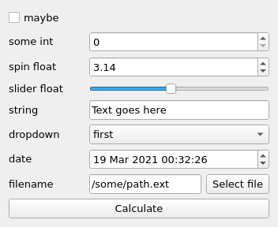
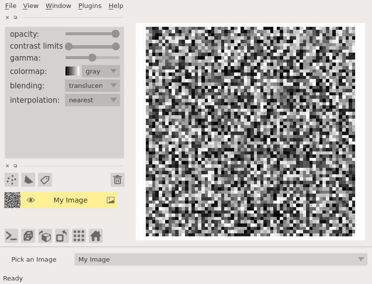
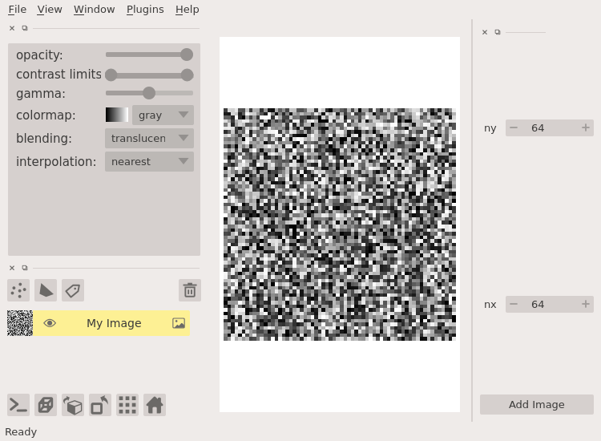
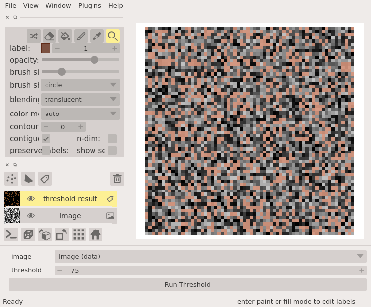
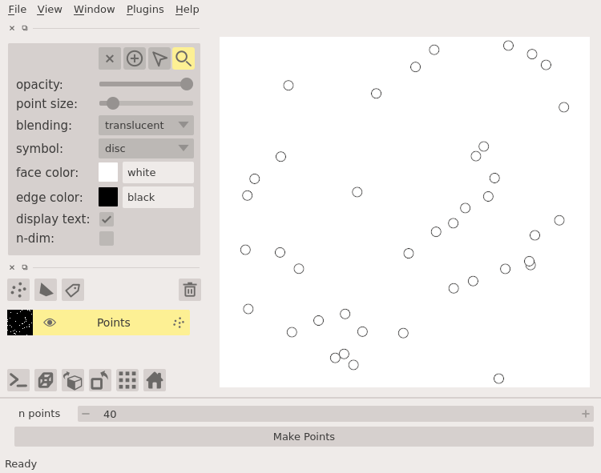
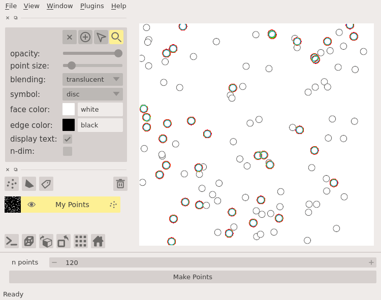

Hello, World!
Using magicgui in napari¶
magicgui¶
magicgui is a python package that assists in building small, composable graphical user interfaces (widgets). It is a general abstraction layer on GUI toolkit backends (like Qt), with an emphasis on mapping python types to widgets. In particular, it makes building widgets to represent function inputs easy:
from magicgui import magicgui
import datetime
import pathlib
@magicgui(
call_button="Calculate",
slider_float={"widget_type": "FloatSlider", 'max': 10},
dropdown={"choices": ['first', 'second', 'third']},
)
def widget_demo(
maybe: bool,
some_int: int,
spin_float=3.14159,
slider_float=4.5,
string="Text goes here",
dropdown='first',
date=datetime.datetime.now(),
filename=pathlib.Path('/some/path.ext')
):
...
widget_demo.show()

For more information on the features and usage of magicgui, see the magicgui
documentation. magicgui does not require
napari, but napari does provide support for using magicgui within napari. The
purpose of this page is to document some of the conveniences provided by napari
when using magicgui with napari-specific type annotations.
magicgui and type annotations¶
magicgui uses type hints to infer
the appropriate widget type for a given function parameter, and to indicate a
context-dependent action for the object returned from the function (in the
absense of a type hint, the type of the default value will be used). Third
party packages (like napari in this case) may provide support for their types
using
magicgui.register_type.
This is how using the type annotations described below leads to widgets and/or
“actions” in napari.
Important
All of the type annotations described below require that the resulting widget
be added to a napari viewer (either via viewer.window.add_dock_widget, or
by providing a magicgui-based widget via the napari_experimental_provide_dock_widget() plugin hook specification).
Parameter Annotations¶
The following napari types may be used as parameter type annotations in magicgui functions to get information from the napari viewer into your magicgui function. The consequence of each type annotation is described below:
any of the
<LayerType>Datatypes fromnapari.types, such asnapari.types.ImageDataornapari.types.LabelsData
Annotating as a Layer subclass¶
If you annotate one of your function parameters as a
Layer subclass (such as Image or
Points), it will be rendered as a
ComboBox widget (i.e. “dropdown menu”), where the
options in the dropdown box are the layers of the corresponding type currently
in the viewer.
from napari.layers import Image
@magicgui
def my_widget(image: Image):
# do something with whatever image layer the user has selected
# note: it *may* be None! so your function should handle the null case
...
Here’s a complete example:
import napari
import numpy as np
from napari.layers import Image
@magicgui(image={'label': 'Pick an Image'})
def my_widget(image: Image):
...
viewer = napari.view_image(np.random.rand(64, 64), name="My Image")
viewer.window.add_dock_widget(my_widget)
Note the widget at the bottom with “My Image” as the currently selected option

Annotating as Layer¶
In the previous example, the dropdown menu will only show
Image layers, because the parameter was annotated as an
Image. If you’d like a dropdown menu that allows the
user to pick from all layers in the layer list, annotate your parameter as
Layer
from napari.layers import Layer
@magicgui
def my_widget(layer: Layer):
# do something with whatever layer the user has selected
# note: it *may* be None! so your function should handle the null case
...
Annotating as napari.types.*Data¶
In the previous example, the object passed to your function will be the actual
Layer instance, meaning you will need to access any
attributes (like layer.data) on your own. If your function is designed to
accept a numpy array, you can use any of the special <LayerType>Data types
from napari.types to indicate that you only want the data attribute from
the layer (where <LayerType> is one of the available layer types). Here’s an
example using napari.types.ImageData
from napari.types import ImageData
import numpy as np
@magicgui
def my_widget(array: ImageData):
# note: it *may* be None! so your function should handle the null case
if array is not None:
assert isinstance(array, np.ndarray) # it will be!
Annotating as napari.Viewer¶
Lastly, if you need to access the actual Viewer instance
in which the widget is docked, you can annotate one of your parameters as a
napari.Viewer.
from napari import Viewer
@magicgui
def my_widget(viewer: Viewer):
...
Caution
Please use this sparingly, as a last resort. If you need to add layers to the viewer from your function, prefer one of the return-annotation methods described below. If you find that you require the viewer instance because of functionality that is otherwise missing here, please consider opening an issue in the napari issue tracker, describing your use case.
Return Annotations¶
The following napari types may be used as return type annotations in magicgui
functions to add layers to napari from your magicgui function. The consequence of
each type is described below:
any of the
<LayerType>Datatypes fromnapari.types, such asnapari.types.ImageDataornapari.types.LabelsData
Returning a Layer subclass¶
If you use a Layer subclass as a return annotation on a
magicgui function, napari will interpet it to mean that the layer returned
from the function should be added to the viewer. The object returned from the
function must be an actual Layer instance.
from napari.layers import Image
import numpy as np
@magicgui
def my_widget(ny: int=64, nx: int=64) -> Image:
return Image(np.random.rand(ny, nx), name='my Image')
Here’s a complete example
@magicgui(call_button='Add Image')
def my_widget(ny: int=64, nx: int=64) -> Image:
return Image(np.random.rand(ny, nx), name='My Image')
viewer = napari.Viewer()
viewer.window.add_dock_widget(my_widget, area='right')
my_widget() # "call the widget" to call the function.
# Normally this would be caused by some user UI interaction
Note the new “My Image” layer in the viewer as a result of having called the widget function.

Note
With this method, a new layer will be added to the layer list each time the
function is called. To update an existing layer, you must use the
LayerDataTuple approach described below
Returning napari.types.*Data¶
In the previous example, the object returned by the function had to be an actual
Layer instance (in keeping with the return type
annotation). In many cases, you may only be interested in receiving and
returning the layer data itself. (There are
many functions already written that accept and return a numpy.ndarray, for
example). In this case, you may use a return type annotation of one the special
<LayerType>Data types from napari.types to indicate that you want data
returned by your function to be turned into the corresponding
Layer type, and added to the viewer.
For example, in combination with the ImageData paramater
annotation described above:
from napari.types import LabelsData, ImageData
@magicgui(call_button='Run Threshold')
def threshold(image: ImageData, threshold: int = 75) -> LabelsData:
"""Threshold an image and return a mask."""
return (image > threshold).astype(int)
viewer = napari.view_image(np.random.randint(0, 100, (64, 64)))
viewer.window.add_dock_widget(threshold)
threshold() # "call the widget" to call the function.
# Normally this would be caused by some user UI interaction

Returning napari.types.LayerDataTuple¶
The most flexible return type annotation is napari.types.LayerDataTuple:
it gives you full control over the layer that will be created and added to the
viewer. (It also lets you update an existing layer with a matching name).
A LayerDataTuple is a tuple in one of the
following three forms:
(layer_data,)a single item tuple containing only layer data (will be interpreted as an image).
(layer_data, {})a 2-tuple of
layer_dataand a metadatadict. the keys in the metadatadictmust be valid keyword arguments to the correspondingnapari.layers.Layerconstructor.
(layer_data, {}, 'layer_type')a 3-tuple of data, metadata, and layer type string.
layer_typeshould be a lowercase string form of one of the layer types (like'points','shapes', etc…). If omitted, the layer type is assumed to be'image'.
The following are all valid napari.types.LayerDataTuple examples:
# an image array
(np.random.rand(64, 64),)
# an image with name and custom blending mode
(np.random.rand(64, 64), {'name': 'My Image', 'blending': 'additive'})
# an empty points layer
(None, {}, 'points')
# points with properties
(np.random.rand(20, 2), {'properties': {'values': np.random.rand(20)}}, 'points')
An example of using a LayerDataTuple return annotation in
a magicgui function:
import napari.types
@magicgui(call_button='Make Points')
def make_points(n_points=40) -> napari.types.LayerDataTuple:
data = 500 * np.random.rand(n_points, 2)
props = {'values': np.random.rand(n_points)}
return (data, {'properties': props}, 'points')
viewer = napari.Viewer()
viewer.window.add_dock_widget(make_points)
make_points() # "call the widget" to call the function.
# Normally this would be caused by some user UI interaction

Returning List[napari.types.LayerDataTuple]¶
You can also create multiple layers by returning a list of
LayerDataTuple.
from typing import List
@magicgui
def make_points(...) -> List[napari.types.LayerDataTuple]:
...
Note
Note: the List[] syntax here is optional from the perspective of napari. You
can return either a single tuple or a list of tuples and they will all be added
to the viewer as long as you use either List[napari.types.LayerDataTuple] or
napari.types.LayerDataTuple. If you want your code to be properly typed, however,
your return type must match your return annotation.
Updating an existing Layer¶
The default behavior is to add a new layer to the viewer for each
LayerDataTuple returned by a magicgui function. By providing a unique
name key in your LayerDataTuple metadata dict, you can
update an existing layer, rather than creating a new layer each time the
function is called:
@magicgui(call_button='Make Points', n_points={'maximum': 200})
def make_points(n_points=40) -> napari.types.LayerDataTuple:
data = 500 * np.random.rand(n_points, 2)
return (data, {'name': 'My Points'}, 'points')
viewer = napari.Viewer()
viewer.window.add_dock_widget(make_points)
# calling this multiple times will just update 'My Points'
make_points()
make_points.n_points.value = 80
make_points()
make_points.n_points.value = 120
make_points()

Avoid imports with forward references¶
Sometimes, it is undesirable to import and/or depend on napari directly just
to provide type annotations. It is possible to avoid importing napari
entirely by annotating with the string form of the napari type. This is called
a Forward
reference:
@magicgui
def my_func(data: 'napari.types.ImageData') -> 'napari.types.ImageData':
...
Tip
If you’d like to maintain IDE type support and autocompletion, you can
do so by hiding the napari imports inside of a typing.TYPE_CHECKING
clause:
from typing import TYPE_CHECKING
if TYPE_CHECKING:
import napari
@magicgui
def my_func(data: 'napari.types.ImageData') -> 'napari.types.ImageData':
...
This will not require napari at runtime, but if it is installed in your
development environment, you will still get all the type inference.
Using magicgui in napari plugin widgets¶
Using magicgui can be an effective way to generate widgets for use in napari
plugins, in particular the
napari_experimental_provide_dock_widget()
plugin hook specification. There is an important distinction to be made,
however, between using magicgui with viewer.window.add_dock_widget, and
using it with
napari_experimental_provide_dock_widget().
viewer.window.add_dock_widget expects an instance of a widget, like a
magicgui.widgets.Widget or a qtpy.QtWidgets.QWidget.
napari_experimental_provide_dock_widget(),
on the other hand, expects a widget class (or, more broadly, a callable that
returns a widget instance). There are two ways to acheive this with magicgui.
@magic_factory¶
In most cases, the @magicgui decorator used in the
preceding examples can simply be replaced with the @magic_factory
decorator, to use it as a plugin dock widget.
For example, the threshold widget shown above could be provided as a napari plugin as follows:
from magicgui import magic_factory
from napari_plugin_engine import napari_hook_implementation
@magic_factory(auto_call=True, threshold={'max': 2 ** 16})
def threshold(
data: 'napari.types.ImageData', threshold: int
) -> 'napari.types.LabelsData':
return (data > threshold).astype(int)
@napari_hook_implementation
def napari_experimental_provide_dock_widget():
return threshold
Note
@magic_factory behaves very much like
functools.partial(): it returns a callable that “remembers” some or
all of the parameters required for a “future” call to magicgui.magicgui().
The parameters provided to @magic_factory can
also be overridden when creating a widget from a factory:
@magic_factory(call_button=True)
def my_factory(x: int):
...
widget1 = my_factory()
widget2 = my_factory(call_button=False, x={'widget_type': 'Slider'})
magicgui.widgets.FunctionGui¶
The other option for using magicgui in plugins is to directly subclass
magicgui.widgets.FunctionGui (which is the type that is returned
by the @magicgui decorator).
from magicgui.widgets import FunctionGui
def my_function(...):
...
class MyGui(FunctionGui):
def __init__(self):
super().__init__(
my_function,
call_button=True,
layout='vertical',
param_options={...}
)
# do whatever other initialization you want here
@napari_hook_implementation
def napari_experimental_provide_dock_widget():
return MyGui